onshape-to-robot — CAD to URDF automatically
13.11Bringing up robot_state_publisher
13.12udev rules — a transferable skill
13.13The LiDAR — LSLiDAR N-10
13.14The camera — Raspicam, V4L2 & a silent failure
13.15Summary, checkpoint, quiz & glossary
After Lecture 12, Forge is a working piece of electromechanical hardware: motors wired to an L298N, an
Arduino Nano running ros_arduino_bridge and holding closed-loop wheel speeds, a battery sized
against a real power budget, a power module distributing 12 V and 5 V, and a Raspberry Pi 4 on a fixed
IP running ROS 2 Humble.
What Forge does not have is any way for that Pi to actually drive the motors over ROS 2, any formal
description of its own physical shape, or any way to perceive the world. Today fixes all three — and by the
end of this session, publishing a Twist to a ROS 2 topic will turn real wheels on your bench.
/cmd_vel into serial commands and encoder counts into /odom, and a single bringup launch file that starts the whole robot.robot_state_publisher./scan, and a camera publishing images (eventually — there's a genuinely instructive bug in the way).Nothing here works in isolation. The URDF gives the LiDAR and camera a place to live in the TF tree, exactly the way Lectures 4 and 5 taught you for LIMO. The driver node's odometry is what the EKF from Lecture 9 would consume. The bringup file is what Lecture 14 mirrors in simulation. This session is where all the separate strands of the course finally converge on one machine.
As set out in §12.1, Forge's ROS 2 packages keep the upstream fastbot_* naming from the
reference design, and the Pi's user and hostname are both fastbot. Every command below is
written to be copy-paste-correct against that. If you renamed things, translate as you go.
Everything you build today lives in a normal colcon workspace on the Pi — the same shape as every
workspace you've built since Lecture 3. Start by SSHing in:
Right after mkdir the workspace has exactly one directory, ~/ros2_ws/src. After
colcon build it has four: src/, build/, install/ and
log/. The last three are entirely generated — colcon build recreates them from
scratch every time, so if a build goes strange, deleting them and rebuilding is a legitimate and often
correct first move.
source ~/ros2_ws/install/setup.bash is what makes newly built packages visible to
ros2 run and ros2 launch. Forgetting it produces "package not found" for a package
you are literally staring at, which is maddening the first time it happens. Add the line to
~/.bashrc below the ROS 2 source line so every new shell picks it up:
source /opt/ros/humble/setup.bash
source ~/ros2_ws/install/setup.bashBy the end of this session, ~/ros2_ws/src will contain five packages:
~/ros2_ws/
└── src/
├── serial_motor/ # the differential-drive driver node (Python)
├── serial_motor_msgs/ # its custom message definitions (CMake)
├── fastbot_description/ # URDF/Xacro + robot_state_publisher launch (CMake)
├── fastbot_bringup/ # the one launch file that starts the whole robot (CMake)
└── Lslidar_ROS2_driver/ # vendor LiDAR driver, cloned in §13.13
Forge needs a ROS 2 driver — the standard ROS concept for a node that lets you talk to a
sensor or actuator through topics, services and actions instead of through its raw protocol. This one will
take differential-drive velocity commands and turn them into the serial commands the Nano understands, so
publishing to /fastbot/cmd_vel moves the wheels.
Name the package serial_motor, not fastbot_motor. It's good practice to keep a
driver generic — nothing in it is Forge-specific, and you may well reuse it on your next robot.
Two packages, because ROS 2 message generation needs CMake while the node itself is comfortably plain Python. Splitting interface definitions into their own package is the standard ROS 2 convention, and it means other nodes can depend on Forge's message types without pulling in the driver implementation.
The published reference material for this build lists MotorCommand.msg in prose but creates
MotorCommands.msg in the touch command one line later. That's a real inconsistency
in real published material, and it's exactly the kind of thing that produces a baffling
ModuleNotFoundError at import time. This lecture standardises on the singular
MotorCommand.msg. Whichever you choose, the filename, the CMakeLists.txt entry and
every Python import must agree exactly — message type names are case- and spelling-sensitive.
int32 mot_1_enc_val
int32 mot_2_enc_valbool is_pwm
float32 mot_1_req_rad_sec
float32 mot_2_req_rad_secfloat32 mot_1_rad_sec
float32 mot_2_rad_sec| Message | Direction | What it carries, and why you'd want it |
|---|---|---|
EncoderVals | Robot → you | Raw cumulative encoder counts per motor. Invaluable for diagnostics: if one wheel's counts stop changing, you have a hardware fault, not a control bug. |
MotorVels | Robot → you | Measured wheel speeds in rad/s. This is the actual speed, which you can plot against the commanded speed to tune the controller. |
MotorCommand | You → robot | A direct per-wheel command, with is_pwm selecting open-loop PWM versus closed-loop rad/s — the o-versus-m distinction from §12.7, exposed as a ROS 2 message. |
A fresh ament_cmake package doesn't know how to build messages. Add the standard generation
boilerplate:
cmake_minimum_required(VERSION 3.8)
project(serial_motor_msgs)
find_package(ament_cmake REQUIRED)
find_package(rosidl_default_generators REQUIRED)
rosidl_generate_interfaces(${PROJECT_NAME}
"msg/EncoderVals.msg"
"msg/MotorCommand.msg"
"msg/MotorVels.msg"
)
ament_export_dependencies(rosidl_default_runtime)
ament_package()<buildtool_depend>rosidl_default_generators</buildtool_depend>
<exec_depend>rosidl_default_runtime</exec_depend>
<member_of_group>rosidl_interface_packages</member_of_group>
That last command is the verification step. If ros2 interface show can find and print your
message, generation worked — don't move on until it does.
Before the code, the maths. The node's job is to take a geometry_msgs/Twist off
/cmd_vel and turn it into two numbers the Nano understands. That's four conversions in a row, and
understanding them means the code in §13.5 is readable rather than mysterious.
A differential-drive robot has two independently controlled wheels and no steering mechanism at all. It turns by varying the difference between wheel speeds:
A Twist describes the motion of the whole robot, not the individual wheels:
v = msg.linear.x # forward speed, metres per second
ω = msg.angular.z # turning speed, radians per secondThe differential-drive equations turn one body velocity into two wheel velocities:
v_L = v − ω · L/2 # left wheel linear speed (m/s)
v_R = v + ω · L/2 # right wheel linear speed (m/s)
where L = wheel separation (the distance between the two wheels)Sanity-check the formula against the three cases in the box above:
| Command | Result | Behaviour |
|---|---|---|
ω = 0 | v_L = v_R = v | Straight-line motion |
v = 0, ω ≠ 0 | v_L = −v_R | Rotation in place |
| both non-zero | v_L ≠ v_R, same sign | A curved path |
Motors spin; they don't translate. Divide by the wheel radius r:
ω_L = v_L / r # left wheel angular velocity (rad/s)
ω_R = v_R / r # right wheel angular velocity (rad/s)The Nano's controller doesn't accept rad/s either — as you discovered by hand in §12.7, it accepts encoder counts per PID loop. That's the same conversion, generalised:
counts_per_loop = ω × (counts_per_revolution / 2π) × (1 / loop_rate)
where counts_per_revolution = your measured encoder_cpr (§12.7)
loop_rate = the firmware's PID rate, 30 Hz
In §12.7 you worked out that 3450 counts/rev at 30 Hz means 115 counts/loop for one revolution per
second. Check it against the formula: one rev/sec is ω = 2π rad/s, so
2π × (3450 / 2π) × (1/30) = 3450/30 = 115. Same number. The code in the next
section computes exactly this, once per /cmd_vel message, for each wheel.
Forge has wheel_diameter = 0.065 m (so r = 0.0325),
wheel_separation = 0.17 m, encoder_cpr = 3450, loop_rate = 30.
You publish linear.x = 0.1 m/s, angular.z = 0.5 rad/s. Work all four steps by
hand: what are v_L and v_R? ω_L and ω_R? What
exact m command does the node send? Keep your answer — you'll check the node's log output
against it in §13.6.
Now the code. Create the file and make it executable:
#!/usr/bin/env python3
import time
import math
import rclpy
import serial
import argparse
from threading import Lock
from rclpy.node import Node
from typing import List, Optional
from nav_msgs.msg import Odometry
from geometry_msgs.msg import Twist
from rclpy.executors import MultiThreadedExecutor
from rclpy.callback_groups import ReentrantCallbackGroup
from serial_motor_msgs.msg import MotorVels, EncoderVals
class MotorDriver(Node):
"""ROS 2 Node for controlling and monitoring a differential drive robot."""
def __init__(self, args) -> None:
"""Initialize the node with serial communication, parameters, publishers and subscribers."""
super().__init__("motor_driver")
self.argument_parsing(args)
# Logger
self._logger = self.get_logger()
# Setup encoder and loop rate parameters; log error if unset or zero.
self.declare_parameter("encoder_cpr", value=0)
self.encoder_cpr = self.get_parameter("encoder_cpr").value
if not self.encoder_cpr:
self._logger.error("Encoder CPR must be set to a non-zero value!")
raise ValueError("Encoder CPR is required and must be non-zero.")
self.declare_parameter("loop_rate", value=0)
self.loop_rate = self.get_parameter("loop_rate").value
if not self.loop_rate:
self._logger.error("Loop rate must be set to a non-zero value!")
raise ValueError("Loop rate is required and must be non-zero.")
# Initialize serial port parameters and optional debugging.
self.declare_parameter("serial_port", value="/dev/ttyACM0")
self.serial_port: str = self.get_parameter("serial_port").value
self.declare_parameter("baud_rate", value=57600)
self.baud_rate: int = self.get_parameter("baud_rate").value
self.declare_parameter("serial_debug", value=False)
self.debug_serial_cmds: bool = self.get_parameter("serial_debug").value
if self.debug_serial_cmds:
self._logger.info("Serial debug enabled")
# Kinematic parameters for differential drive.
self.declare_parameter("wheel_diameter", value=0.065)
self.wheel_diameter = self.get_parameter("wheel_diameter").value
self.declare_parameter("wheel_separation", value=0.17)
self.wheel_separation = self.get_parameter("wheel_separation").value
self.wheel_radius = self.wheel_diameter / 2
# ROS 2 publishers and subscribers.
# A reentrant callback group allows concurrent execution.
self.callback_group = ReentrantCallbackGroup()
self._sub_cmd_vel = self.create_subscription(
Twist,
"cmd_vel",
self.cmd_vel_callback,
10,
callback_group=self.callback_group,
)
self.motor_vels_pub_ = self.create_publisher(MotorVels, "motor_vels", 10)
self.encoder_pub_ = self.create_publisher(EncoderVals, "encoder_vals", 10)
self.odom_pub_ = self.create_publisher(Odometry, "odom", 10)
# Timer callback to continuously publish odometry.
self.create_timer(0.1, self._timer_callback, callback_group=self.callback_group)
# Initialize encoder and speed tracking variables.
self.last_enc_read_time = time.time()
self.last_m1_enc = 0
self.last_m2_enc = 0
self.m1_spd = 0.0
self.m2_spd = 0.0
self.mutex = Lock() # Ensures thread-safe serial communication.
# Initialize odometry variables.
self.x = 0.0 # Position in x
self.y = 0.0 # Position in y
self.theta = 0.0 # Orientation (yaw)
self.last_time = time.time()
# Attempt to establish a serial connection; log error if unsuccessful.
try:
self._logger.info(
f"Connecting to port {self.serial_port} at {self.baud_rate}."
)
self.conn = serial.Serial(self.serial_port, self.baud_rate, timeout=1.0)
self._logger.info(f"Connected to {self.conn}")
except serial.SerialException as e:
self._logger.error(f"Failed to connect to {self.serial_port}: {e}")
raise
def argument_parsing(self, args):
parser = argparse.ArgumentParser(description="Arguments for frame names.")
parser.add_argument(
"-robot_name_value",
type=str,
metavar="botbox_default",
default="fastbot_X",
help="Name of the robot",
)
self.args = parser.parse_args(args[1:])
def send_pwm_motor_command(self, mot_1_pwm: float, mot_2_pwm: float) -> None:
"""Send an open-loop PWM command to set motor speeds."""
self.send_command(f"o {int(mot_1_pwm)} {int(mot_2_pwm)}")
def send_feedback_motor_command(
self, mot_1_ct_per_loop: float, mot_2_ct_per_loop: float
) -> None:
"""Send a closed-loop command expressed in encoder counts per PID loop."""
self.send_command(f"m {int(mot_1_ct_per_loop)} {int(mot_2_ct_per_loop)}")
def send_encoder_read_command(self) -> List[int]:
"""Request the current encoder values from the motor controller."""
resp = self.send_command("e")
if resp:
try:
return [int(raw_enc) for raw_enc in resp.split()]
except ValueError:
self._logger.error("Failed to parse encoder values.")
return []
def _timer_callback(self) -> None:
"""Timer callback to periodically read encoders and publish telemetry."""
self.check_encoders()
def cmd_vel_callback(self, msg: Twist) -> None:
"""Convert an incoming Twist into a closed-loop motor command."""
# Extract linear and angular velocities from the cmd_vel message.
linear_vel = msg.linear.x
angular_vel = msg.angular.z
# Differential drive kinematics: body velocity -> wheel linear speeds (m/s).
left_wheel_speed = linear_vel - (angular_vel * self.wheel_separation) / 2
right_wheel_speed = linear_vel + (angular_vel * self.wheel_separation) / 2
# Avoid divide by zero on the wheel radius.
if self.wheel_radius == 0:
self._logger.error(
"Wheel radius is zero, cannot calculate angular velocities."
)
return
# Wheel linear speeds (m/s) -> wheel angular velocities (rad/s).
left_wheel_rad_per_sec = left_wheel_speed / self.wheel_radius
right_wheel_rad_per_sec = right_wheel_speed / self.wheel_radius
self._logger.info(
f"cmd_vel -> Linear: {linear_vel} m/s, Angular: {angular_vel} rad/s | "
f"Left wheel: {left_wheel_rad_per_sec:.2f} rad/s, "
f"Right wheel: {right_wheel_rad_per_sec:.2f} rad/s"
)
# rad/s -> encoder counts per PID loop.
scaler = (1 / (2 * math.pi)) * self.encoder_cpr * (1 / self.loop_rate)
mot_1_ct_per_loop = left_wheel_rad_per_sec * scaler
mot_2_ct_per_loop = right_wheel_rad_per_sec * scaler
# Only send finite values down the wire.
if math.isfinite(mot_1_ct_per_loop) and math.isfinite(mot_2_ct_per_loop):
self.send_feedback_motor_command(mot_1_ct_per_loop, mot_2_ct_per_loop)
else:
self._logger.warning(
"Non-finite motor count detected, skipping command send."
)
def check_encoders(self) -> None:
"""Read encoders, compute wheel speeds, publish encoder and velocity topics."""
resp = self.send_encoder_read_command()
if resp:
# Time elapsed since the last encoder read.
new_time = time.time()
time_diff = new_time - self.last_enc_read_time
self.last_enc_read_time = new_time
# Encoder delta per motor.
m1_diff = resp[0] - self.last_m1_enc
self.last_m1_enc = resp[0]
m2_diff = resp[1] - self.last_m2_enc
self.last_m2_enc = resp[1]
# Counts -> rad/s.
rads_per_ct = 2 * math.pi / self.encoder_cpr
self.m1_spd = m1_diff * rads_per_ct / time_diff
self.m2_spd = m2_diff * rads_per_ct / time_diff
# Publish the measured motor velocities.
spd_msg = MotorVels()
spd_msg.mot_1_rad_sec = self.m1_spd
spd_msg.mot_2_rad_sec = self.m2_spd
self.motor_vels_pub_.publish(spd_msg)
# Publish the raw encoder values.
enc_msg = EncoderVals()
enc_msg.mot_1_enc_val = self.last_m1_enc
enc_msg.mot_2_enc_val = self.last_m2_enc
self.encoder_pub_.publish(enc_msg)
# Publish odometry derived from the encoder readings.
# self.publish_odometry() # <-- see the exercise below
def publish_odometry(self) -> None:
"""Publish odometry data based on encoder readings (dead reckoning)."""
current_time = time.time()
dt = current_time - self.last_time
self.last_time = current_time
if dt == 0:
return
# Distance travelled by each wheel this tick.
left_distance = self.m1_spd * dt * self.wheel_radius
right_distance = self.m2_spd * dt * self.wheel_radius
# Average forward distance and change in heading.
avg_distance = (left_distance + right_distance) / 2.0
d_theta = (right_distance - left_distance) / self.wheel_separation
# Integrate the pose.
self.theta = (self.theta + d_theta) % (2 * math.pi)
self.x += avg_distance * math.cos(self.theta)
self.y += avg_distance * math.sin(self.theta)
# Build and publish the Odometry message.
odom_msg = Odometry()
odom_msg.header.stamp = self.get_clock().now().to_msg()
odom_msg.header.frame_id = self.args.robot_name_value + "_odom"
odom_msg.child_frame_id = self.args.robot_name_value + "_base_link"
odom_msg.pose.pose.position.x = self.x
odom_msg.pose.pose.position.y = self.y
odom_msg.pose.pose.position.z = 0.0
quat = self.euler_to_quaternion(0, 0, self.theta)
odom_msg.pose.pose.orientation.x = quat[0]
odom_msg.pose.pose.orientation.y = quat[1]
odom_msg.pose.pose.orientation.z = quat[2]
odom_msg.pose.pose.orientation.w = quat[3]
odom_msg.twist.twist.linear.x = avg_distance / dt
odom_msg.twist.twist.angular.z = d_theta / dt
self.odom_pub_.publish(odom_msg)
def euler_to_quaternion(
self, roll: float, pitch: float, yaw: float
) -> tuple:
"""Convert Euler angles to a quaternion."""
qx = math.sin(roll / 2) * math.cos(pitch / 2) * math.cos(yaw / 2) - math.cos(
roll / 2
) * math.sin(pitch / 2) * math.sin(yaw / 2)
qy = math.cos(roll / 2) * math.sin(pitch / 2) * math.cos(yaw / 2) + math.sin(
roll / 2
) * math.cos(pitch / 2) * math.sin(yaw / 2)
qz = math.cos(roll / 2) * math.cos(pitch / 2) * math.sin(yaw / 2) - math.sin(
roll / 2
) * math.sin(pitch / 2) * math.cos(yaw / 2)
qw = math.cos(roll / 2) * math.cos(pitch / 2) * math.cos(yaw / 2) + math.sin(
roll / 2
) * math.sin(pitch / 2) * math.sin(yaw / 2)
return (qx, qy, qz, qw)
def send_command(self, cmd_string: str) -> Optional[str]:
"""Send a command to the motor controller over serial and read the reply."""
with self.mutex:
try:
cmd_string += "\r" # Carriage return terminates a command.
self.conn.write(cmd_string.encode("utf-8"))
if self.debug_serial_cmds:
self._logger.info(f"Sent: {cmd_string}")
# Read the response up to the terminating carriage return.
response = self.conn.read_until(b"\r").decode("utf-8").strip("\r")
if not response:
self._logger.warning(f"Serial timeout on command: {cmd_string}")
return None
if self.debug_serial_cmds:
self._logger.info(f"Received: {response}")
return response
except serial.SerialTimeoutException:
self._logger.error("Serial timeout occurred.")
return None
def close_conn(self) -> None:
"""Close the serial connection cleanly."""
if self.conn.is_open:
self.conn.close()
self._logger.info("Serial connection closed.")
def main(args: Optional[List[str]] = None) -> None:
"""Initialize the MotorDriver node and run the ROS 2 executor loop."""
rclpy.init(args=args)
try:
args_without_ros = rclpy.utilities.remove_ros_args(args)
motor_driver = MotorDriver(args_without_ros)
# Two threads so the cmd_vel callback and the encoder timer can overlap.
executor = MultiThreadedExecutor(num_threads=2)
executor.add_node(motor_driver)
try:
executor.spin()
finally:
executor.shutdown()
motor_driver.destroy_node()
finally:
rclpy.shutdown()
if __name__ == "__main__":
main()| Method | What it does |
|---|---|
__init__ | Parses launch arguments; declares the parameters that make this driver reusable (encoder_cpr, loop_rate, serial_port, baud_rate, wheel_diameter, wheel_separation); creates the /cmd_vel subscription and the motor_vels, encoder_vals and odom publishers; starts a 10 Hz timer; and opens the serial connection to the Nano. |
cmd_vel_callback | The whole of §13.4 in about twenty lines: extract v and ω, split into wheel speeds, divide by radius, scale to counts per loop, send m. |
check_encoders | Runs from the timer at 10 Hz: sends e, differences the counts against the previous read, converts to rad/s using the elapsed time, and publishes MotorVels and EncoderVals. |
publish_odometry | Dead reckoning: integrates wheel distances into an (x, y, θ) pose and publishes nav_msgs/Odometry. This is the same wheel odometry you fused with an IMU in Lecture 9. |
send_command | The only place that touches the serial port, guarded by a Lock. That mutex is essential: with a multi-threaded executor, the /cmd_vel callback and the encoder timer can fire simultaneously, and two interleaved writes to one serial port produce garbage. |
Look carefully at the end of check_encoders: the call to self.publish_odometry() is
commented out. The node therefore advertises an odom topic, contains a
complete and correct odometry implementation — and never publishes a single message on it. Nothing errors.
ros2 topic list shows /fastbot/odom existing. It's the same class of silent failure
as the camera bug in §13.14, and it comes straight from the reference implementation.
Uncomment self.publish_odometry(), rebuild, and verify with
ros2 topic hz /fastbot/odom that messages are actually flowing. Then drive Forge forward one
measured metre by hand-timed teleop and compare the reported pose.position.x against a tape
measure. Any error you find traces back to one of three numbers: encoder_cpr,
wheel_diameter, or wheel_separation. Which one would you suspect first if the
straight-line distance is wrong, and which if only the turns are wrong? (Lecture 11,
§11.5 asked you exactly this about LIMO.)
publish_odometry updates self.theta before using it to project
x and y. Most textbook dead-reckoning integrations use the heading at the
midpoint of the timestep instead. Over a long curved path, would that difference accumulate or
cancel out? What kind of test would reveal it — a straight line, a single 90° turn, or a closed square
loop?
Running the node with six parameters on the command line every time would be miserable. A launch file wraps them up — and, more importantly, introduces a design habit that runs through the rest of this course.
from launch_ros.actions import Node
from launch import LaunchDescription
from launch.substitutions import LaunchConfiguration
from launch.actions import DeclareLaunchArgument, OpaqueFunction
def launch_setup(context, *args, **kwargs):
"""Build the node configuration from the launch arguments."""
robot_name = LaunchConfiguration("robot_name")
serial_port = LaunchConfiguration("serial_port").perform(context)
baud_rate = int(LaunchConfiguration("baud_rate").perform(context))
loop_rate = int(LaunchConfiguration("loop_rate").perform(context))
encoder_cpr = int(LaunchConfiguration("encoder_cpr").perform(context))
driver_node = Node(
package="serial_motor",
executable="motor_driver",
name="serial_motor_driver",
namespace=robot_name,
parameters=[
{
"robot_name": robot_name,
"serial_port": serial_port, # Port where the device is connected.
"baud_rate": baud_rate, # Serial speed; must match the firmware.
"loop_rate": loop_rate, # Frequency (Hz) at which the PID loop spins.
"encoder_cpr": encoder_cpr, # Encoder counts per revolution.
}
],
arguments=["-robot_name", robot_name],
# remappings=[('/input/topic', '/output/topic')],
output="screen",
)
return [driver_node]
def generate_launch_description():
robot_name_arg = DeclareLaunchArgument("robot_name", default_value="fastbot_X")
serial_port_arg = DeclareLaunchArgument("serial_port", default_value="/dev/ttyACM0")
baud_rate_arg = DeclareLaunchArgument("baud_rate", default_value="57600")
loop_rate_arg = DeclareLaunchArgument("loop_rate", default_value="30")
encoder_cpr_arg = DeclareLaunchArgument("encoder_cpr", default_value="2500")
return LaunchDescription(
[
robot_name_arg,
serial_port_arg,
baud_rate_arg,
loop_rate_arg,
encoder_cpr_arg,
OpaqueFunction(function=launch_setup),
]
)| Parameter | Default | What it controls |
|---|---|---|
robot_name | fastbot_X | The namespace for every topic and node this launch file creates — see below |
serial_port | /dev/ttyACM0 | Where the Nano is. Replace with a stable udev symlink (§13.12) — /dev/arduino_nano |
baud_rate | 57600 | Must match the firmware exactly. A mismatch doesn't error — it produces garbage bytes. |
loop_rate | 30 | The Nano's PID loop rate, from ros_arduino_bridge |
encoder_cpr | 2500 | Override this with the value you measured in §12.7 |
2500 default is a placeholder, not a measurement
This is the discrepancy §12.7 warned you about: this file defaults to 2500, the bringup file in
§13.7 defaults to 2550, and the reference build actually measured about 3450. None
of those is right for your motors. Pass your measured value explicitly, every time — and consider
changing both defaults so a future you can't be caught out by them.
colcon aware of the node and the launch directory
An ament_python package won't install a launch/ directory or create the
motor_driver executable unless you tell it to:
import os
from glob import glob
from setuptools import setup
package_name = 'serial_motor'
setup(
name=package_name,
version='0.0.0',
packages=[package_name],
data_files=[
('share/ament_index/resource_index/packages',
['resource/' + package_name]),
('share/' + package_name, ['package.xml']),
# Install every launch file in launch/ into the package share directory.
(os.path.join('share', package_name, 'launch'), glob('launch/*.launch.py')),
],
install_requires=['setuptools'],
zip_safe=True,
maintainer='fastbot',
maintainer_email='fastbot@todo.todo',
description='Serial differential-drive motor driver for ROS 2',
license='Apache-2.0',
entry_points={
'console_scripts': [
'motor_driver = serial_motor.motor_driver:main',
],
},
)robot_name threads through everything
Every launch file in this build carries a robot_name argument, and it's worth stopping to
understand why that one string is one of the most transferable software-design habits in this session — more
transferable, in the long run, than any individual driver.
Without namespacing, two Forges on the same lab network would both publish /cmd_vel, both
broadcast a base_link TF frame, and both claim the same node names. ROS 2's discovery system
doesn't know these are two different physical robots — it just sees two publishers fighting over one topic.
Threading robot_name through every namespace and frame name turns /cmd_vel into
/fastbot/cmd_vel and base_link into fastbot_base_link, and the collision
disappears.
You'll meet this pattern — one identifier threaded through every name in a system — any time you need multiple instances of the same software side by side: multiple robots on one network, multiple simulated agents in one Gazebo world (Lecture 14), even multiple instances of a microservice in a distributed system outside robotics entirely. Designing for it from day one, even when you only ever run one robot, costs almost nothing and saves a rewrite later.
🎉 Wheels off the ground, press i. Forge is now driven by ROS 2. Watch session 1's
log: it prints the computed left and right wheel speeds in rad/s for every Twist it receives —
compare those numbers against the ones you worked out by hand in §13.4's exercise.
With the driver running, echo the telemetry: ros2 topic echo /fastbot/motor_vels in one
terminal while teleoperating in another. Command a pure rotation (j or l) and
confirm the two reported wheel speeds are roughly equal and opposite. Then command straight forward and
confirm they're roughly equal and the same sign. If they aren't, you have found a wiring or sign bug that
would otherwise only show up as Forge mysteriously curving.
Launching each piece by hand doesn't scale past two. The ROS convention is a dedicated bringup package holding the single launch file you run to start the entire robot. By the end of this session it will start four things: the motor driver, the robot state publisher, the LiDAR driver and the camera node.
<?xml version="1.0" encoding="UTF-8"?>
<launch>
<arg name="use_sim_time" default="False"/>
<arg name="robot_name" default="fastbot"/>
<arg name="serial_port" default="/dev/arduino_nano"/>
<arg name="baud_rate" default="57600"/>
<arg name="loop_rate" default="30"/>
<arg name="encoder_cpr" default="2550"/>
<!-- Differential serial motor driver -->
<include file="$(find-pkg-share serial_motor)/launch/serial_motor.launch.py">
<arg name="robot_name" value="$(var robot_name)"/>
<arg name="serial_port" value="$(var serial_port)"/>
<arg name="baud_rate" value="$(var baud_rate)"/>
<arg name="loop_rate" value="$(var loop_rate)"/>
<arg name="encoder_cpr" value="$(var encoder_cpr)"/>
</include>
</launch>
Note the XML <arg> elements mirror the parameters declared in
motor_driver.py and re-declared in serial_motor.launch.py. That's the ROS 2 launch
idiom: parameters get plumbed up from the node, through each launch file, to the top level, where a single
command-line override reaches all the way down.
Notice also that serial_port now defaults to /dev/arduino_nano, not
/dev/ttyACM0. That symlink doesn't exist yet — you'll create it in §13.12.
✅ One command now starts Forge. Every remaining section of this lecture adds one more <include>
to this file.
An ament_cmake package needs to be told to install its launch files, or
find-pkg-share will resolve to a share directory that doesn't contain them:
# fastbot_bringup/CMakeLists.txt
find_package(ament_cmake REQUIRED)
install(
DIRECTORY launch
DESTINATION share/${PROJECT_NAME}
)Forge's chassis is three flat plates held apart by hex standoffs — a shape that is cheap to make from sheet material (PVC, acrylic or thin plywood) on a laser cutter or CNC router, and easy to iterate on. This section designs it in Onshape, a free browser-based CAD package, for one reason above all others: in §13.10 the assembly you build here converts automatically into Forge's URDF.
Even though this section teaches you to design it yourself, the reference files are available and worth opening alongside:
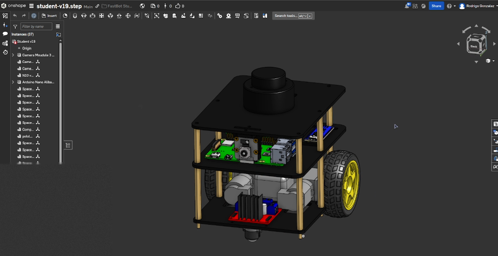
The three plates (top, middle, bottom) are the robot's skeleton. Each one is the same short workflow, which is the fundamental loop of parametric CAD:
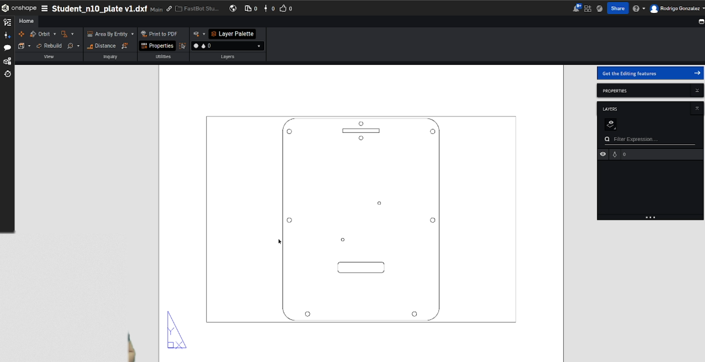
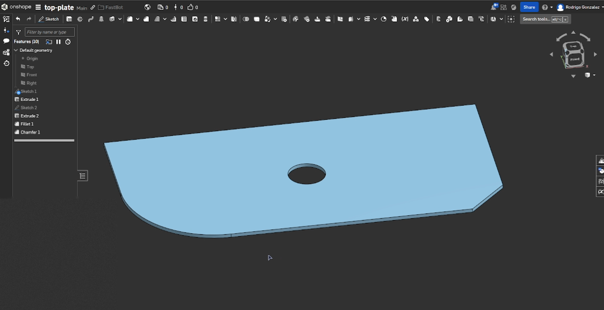
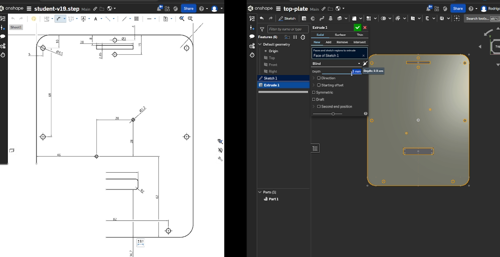
.stl when done.An M3 screw does not fit through a 3.00 mm hole in a part you actually cut. Sheet material, kerf width and cutter accuracy all conspire against you. Draw clearance holes a few tenths of a millimetre oversize (3.2-3.4 mm is typical for M3) and you'll assemble the robot with your fingers instead of a drill. This is exactly the same tolerancing thinking Lecture 14 applies to 3D-printed parts.
With parts modelled, assemble them. Two sources of parts matter here: things you design (the plates, the hex standoffs) and things you don't — nobody should model a Raspberry Pi from scratch when accurate models are freely published on libraries like GrabCAD.
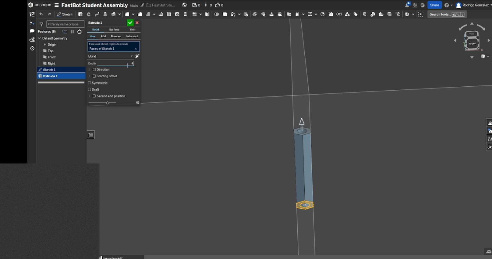
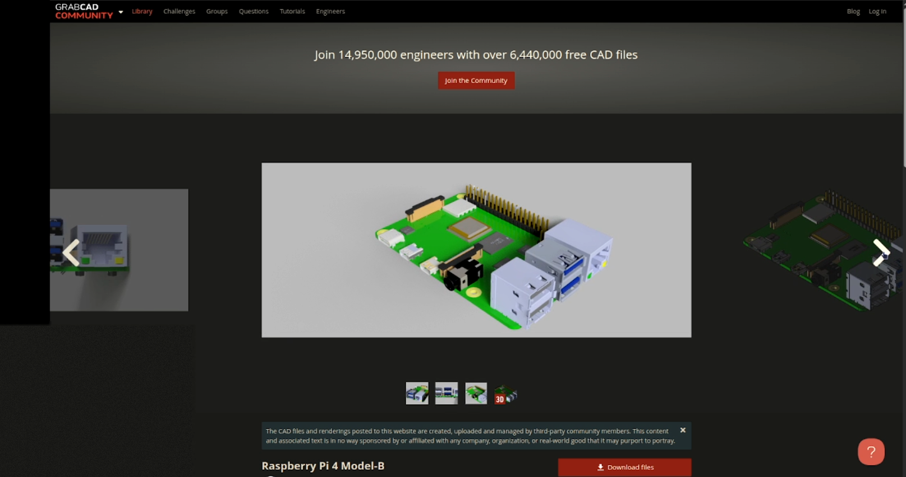
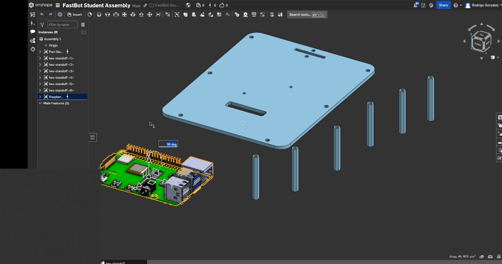
A mate is a geometric constraint between two parts. This is the step that matters most for what comes next, because mates become URDF joints in §13.10.
fixed URDF joint.continuous URDF joint. Use it for the wheels.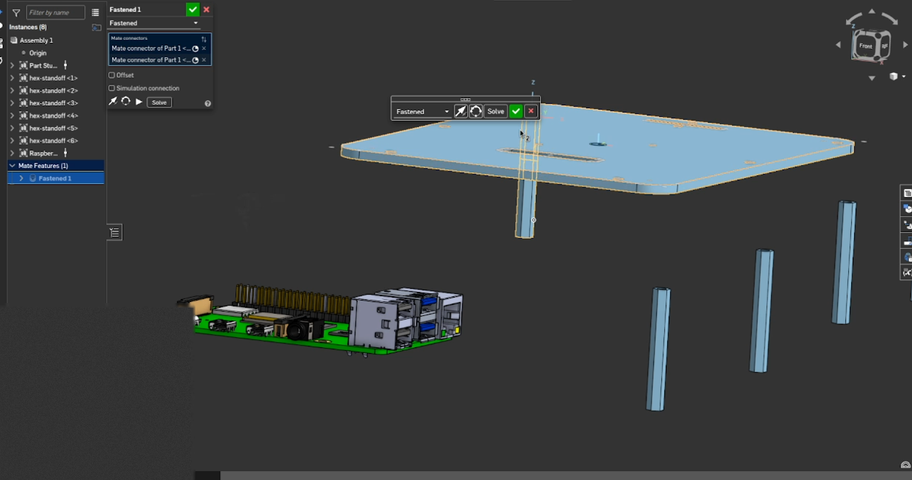
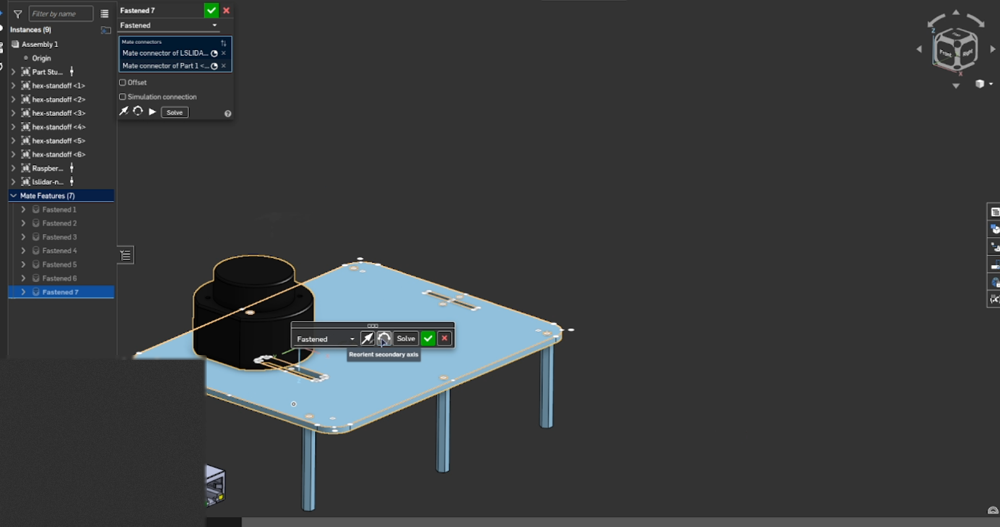
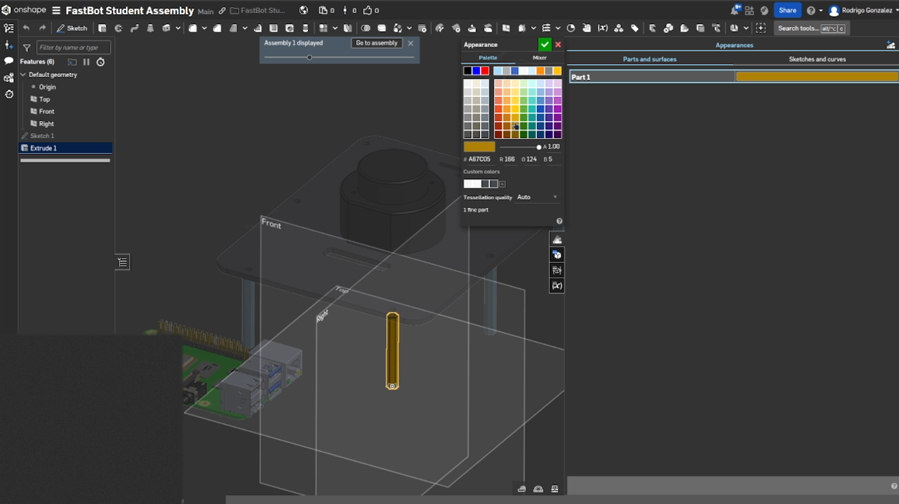
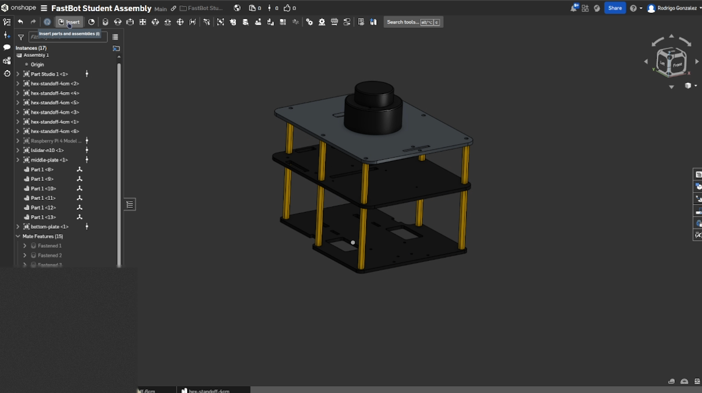
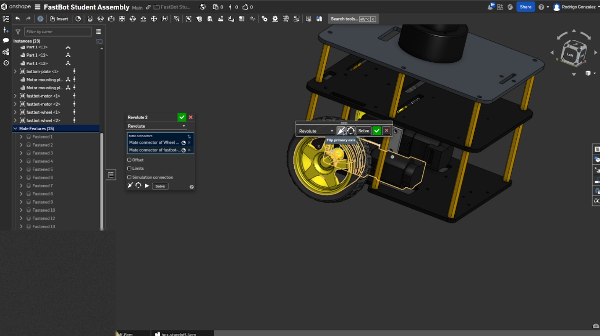
Designing the plates in Onshape, assembling them with imported components from GrabCAD, and exporting DXF files for laser cutting gives you a straight line from digital prototype to physical part with no transcription in between. That is exactly why the same CAD model can also produce the URDF: there is only one source of truth for Forge's geometry, and everything else is generated from it.
Design the top plate yourself from scratch, then export it as .stl and also as a
.dxf flat pattern. Compare your plate against the reference PVC sheet drawings linked above.
Where do they differ, and does any difference actually matter — or is it just a different valid solution to
the same constraints?
ROS 2 needs to know Forge's physical structure in order to understand how it moves in space, simulate its kinematics and dynamics, and visualize it correctly in RViz. That description is a URDF (Unified Robot Description Format) — an XML file that is, effectively, a digital blueprint.
A URDF has two kinds of element:
Here is the smallest URDF that describes a two-wheeled robot:
<?xml version="1.0"?>
<robot name="two_wheeled_robot">
<!-- Define the base link -->
<link name="base_link">
<visual>
<geometry>
<box size="0.5 0.3 0.1"/>
</geometry>
</visual>
</link>
<!-- Left wheel link -->
<link name="left_wheel"/>
<!-- Right wheel link -->
<link name="right_wheel"/>
<!-- Joints connecting the wheels to base_link -->
<joint name="left_wheel_joint" type="revolute">
<parent link="base_link"/>
<child link="left_wheel"/>
<origin xyz="-0.2 0.15 0.1" rpy="0 0 0"/>
<axis xyz="0 1 0"/>
</joint>
<joint name="right_wheel_joint" type="revolute">
<parent link="base_link"/>
<child link="right_wheel"/>
<origin xyz="-0.2 -0.15 0.1" rpy="0 0 0"/>
<axis xyz="0 1 0"/>
</joint>
</robot>This is the reference example, reproduced faithfully — and it will not load. Find the problems before reading on:
base, not base_link — a link that doesn't exist. check_urdf catches this immediately.type="revolute", which requires <limit> tags. A wheel has no reason to stop at any particular angle, so it should be type="continuous".axis xyz="0 1 0". Depending on how the wheels are oriented, the two sides often need opposite signs — and getting that wrong doesn't error, it just makes the robot drive in a slow circle. Lecture 4 warned you about exactly this on LIMO.
Save the snippet as two_wheeled_robot.urdf, fix all three bugs, and validate with
check_urdf two_wheeled_robot.urdf — the same tool Lecture 4 used on LIMO's expanded Xacro.
Confirm it reports a clean link tree before moving on.
You could. It would mean measuring every component's size, shape and position, then writing XML to represent each one — and Forge has a chassis, two motors, two wheels, a LiDAR, a camera and a caster. That's time-consuming and, more importantly, error-prone: a mistyped origin doesn't crash anything, it silently puts your LiDAR 2 cm from where it really is, and every downstream algorithm quietly inherits the error.
Since Forge already exists as an accurate CAD assembly (§13.8), the better answer is to generate the URDF from it. That guarantees the description matches the real robot's dimensions, eliminates human measurement error, and lets you re-generate in seconds when the design changes.
onshape-to-robot — CAD to URDF automaticallyonshape-to-robot is a command-line tool that talks to Onshape's REST API, walks your assembly's mate tree, and emits a complete URDF — links, joints, origins, inertial properties and exported STL meshes — with zero hand-typed XML.
The tool's one real weakness: it converts every part of an assembly into a link. Run it on your full design and you get a link for every screw, standoff and chip on the Raspberry Pi — an unusable URDF and a simulation that crawls. So you feed it a deliberately simplified assembly. The reference simplified assembly has no subassemblies and only 9 parts: the chassis, 2 motors, 2 wheels (each a tyre + rim pair), the LiDAR and the camera. Those become 7 links, fixed joints between most of them, and 2 revolute joints for the wheels.
The tool needs permission to read your document. Create a key pair in Onshape's Developer Portal: click Create new API key, tick the permissions you need, and click Create API key.
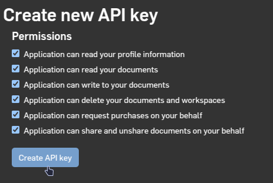
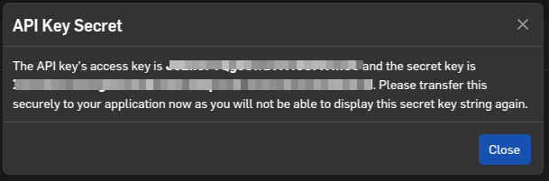
An access-key/secret-key pair lets anyone holding it act on your CAD account. Keep the pair in a file you
explicitly add to .gitignore and never commit — the same secrets hygiene you'd apply to a
database password or a cloud token anywhere else in software engineering. A key pushed to a repository, even
briefly, even a private one, should be treated as compromised and rotated immediately. This matters
concretely in Lecture 14, where you push these very packages to GitHub.
fastbot_description follows the ROS convention of a dedicated *_description package
as the single centralized home for a robot's kinematic structure, physical properties and appearance —
exactly the role limo_description played back in Lecture 4.
{
"documentId": "YOUR-ONSHAPE-DOCUMENT-ID",
"outputFormat": "urdf",
"packageName": "fastbot_description/onshape",
"robotName": "fastbot",
"assemblyName": "fastbot-student"
}
The documentId is the 24-character string in your browser's address bar, immediately after
https://cad.onshape.com/documents/ when the assembly is open:
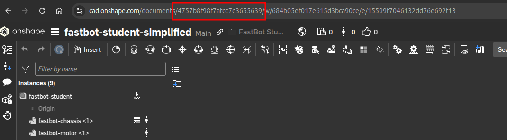
documentId in the URL, and below it the simplified assembly's instance list — chassis, motors, wheels, LiDAR, camera.onshape-to-robot reads the keys from environment variables, so keep them in a sourceable script:
#!/bin/bash
# Replace with your own keys, copied from the popup in Figure 13.14.
export ONSHAPE_API=https://cad.onshape.com
export ONSHAPE_ACCESS_KEY=YOUR-ACCESS-KEY
export ONSHAPE_SECRET_KEY=YOUR-SECRET-KEYonshape/api-keys.shCreate that .gitignore line now, before the file ever exists in a commit.
* Not workspace ID specified, retrieving the current workspace ...
+ Using workspace id: 684b05ef017e615d3bca90ce
* Retrieving elements in the document, searching for the assembly...
* Retrieving assembly with id 15599f7046132dd76e692f13
+ Found DOF: right_motor (fixed)
+ Found DOF: left_motor (fixed)
+ Found DOF: lidar (fixed)
+ Found DOF: left_wheel (continuous)
+ Found DOF: right_wheel (continuous)
+ Found DOF: camera (fixed)
* Found total 6 degrees of freedom
* Found 1 root nodes:
- fastbot-chassis <1>
+ Adding part fastbot-chassis <1>
+ Adding part fastbot-motor <1>
+ Adding part Wheel D65x25 v1 <4>
WARNING: part Wheel D65x25 v1 <4> has no mass, maybe you should assign a material to it?
+ Adding part Wheel D65x25 v1 <3>
WARNING: Parts with same name "wheel_d65x25_v1", incrementing STL name to "wheel_d65x25_v1__2"
WARNING: part Wheel D65x25 v1 <3> has no mass, maybe you should assign a material to it?
+ Adding part fastbot-motor <2>
+ Adding part Wheel D65x25 v1 <1>
WARNING: part Wheel D65x25 v1 <1> has no mass, maybe you should assign a material to it?
+ Adding part Wheel D65x25 v1 <2>
WARNING: part Wheel D65x25 v1 <2> has no mass, maybe you should assign a material to it?
+ Adding part LSLIDAR-N10 <1>
WARNING: part LSLIDAR-N10 <1> has no mass, maybe you should assign a material to it?
+ Adding part raspicam <1>
WARNING: part raspicam <1> has no mass, maybe you should assign a material to it?
* Writing robot.urdf
✅ robot.urdf now exists in fastbot_description/onshape/, alongside an
assets/ directory of exported STL meshes. Read that log carefully — it's telling you a lot.
| Log line | What it means |
|---|---|
Found DOF: left_wheel (continuous) | A revolute mate in the assembly became a continuous URDF joint. The mate name is the joint name. |
Found DOF: lidar (fixed) | A fasten mate became a fixed joint — the LiDAR is rigidly attached. |
Found 1 root nodes: fastbot-chassis | The chassis is the root of the kinematic tree; it becomes base_link. |
WARNING: ... has no mass | Not cosmetic. Parts with no assigned material get placeholder inertials, and a Gazebo model with wrong masses behaves wrong. See the exercise below. |
incrementing STL name | Two parts shared a name; the exporter disambiguated the mesh files. Harmless, but a hint to name parts uniquely. |
A URDF with wrong inertial properties loads fine in RViz — visualization doesn't care about mass — and then behaves bizarrely in Gazebo, where physics very much does. Wheels with near-zero inertia jitter or sink through the floor; a chassis with the wrong mass distribution tips over on gentle turns. Assign materials to every part in Onshape and re-export, or hand-correct the inertials afterwards. Fixing it now costs five minutes; debugging it as "my Gazebo robot is possessed" costs an afternoon.
Two details in that tree are worth pausing on. First, the wheels are children of the motors, not of the chassis directly — because that's how they're mated in CAD, and the exporter faithfully reproduces the real mechanical hierarchy. Second, the motor bodies are attached with fixed joints: the motor housing is bolted rigidly to the chassis and doesn't move. What rotates is the output shaft, and that rotation is the wheel joint.
Forge's ball caster is a single fixed link with no rotating parts at all, even though a real caster ball obviously spins. Why is that an acceptable simplification here — and what would you have to change if Forge needed to simulate the caster's behaviour on a rough surface accurately? Relate your answer to the more-joints-versus-faster-simulation tradeoff the "simplify the assembly" box raised.
robot_state_publisher
A URDF sitting on disk does nothing. robot_state_publisher is the node that loads
it, listens for joint angles on /joint_states, and broadcasts the resulting TF tree — the same
role it played for LIMO in Lecture 5. This is what lets RViz draw Forge, and what lets a LiDAR scan be
interpreted relative to the chassis rather than floating in space.
import os
from ament_index_python.packages import get_package_share_directory
from launch import LaunchDescription
from launch_ros.actions import Node
import xacro
from launch.actions import DeclareLaunchArgument, OpaqueFunction
from launch.substitutions import LaunchConfiguration
def launch_setup(context, *args, **kwargs):
robot_name = LaunchConfiguration("robot_name").perform(context)
robot_file = LaunchConfiguration("robot_file").perform(context)
robot_description_topic_name = "/" + robot_name + "_robot_description"
robot_state_publisher_name = robot_name + "_robot_state_publisher"
joint_state_topic_name = "/" + robot_name + "/joint_states"
package_description = "fastbot_description"
robot_desc_path = os.path.join(
get_package_share_directory(package_description), "onshape/", robot_file
)
# Load the XACRO file, passing the robot name through as an argument.
robot_desc = xacro.process_file(
robot_desc_path, mappings={"robot_name": robot_name}
)
xml = robot_desc.toxml()
robot_state_publisher_node = Node(
package="robot_state_publisher",
executable="robot_state_publisher",
name=robot_state_publisher_name,
emulate_tty=True,
parameters=[{"use_sim_time": True, "robot_description": xml}],
remappings=[
("/robot_description", robot_description_topic_name),
("/joint_states", joint_state_topic_name),
],
output="screen",
)
return [robot_state_publisher_node]
def generate_launch_description():
robot_name_arg = DeclareLaunchArgument("robot_name", default_value="fastbot")
robot_file_arg = DeclareLaunchArgument("robot_file", default_value="robot.urdf")
return LaunchDescription(
[robot_name_arg, robot_file_arg, OpaqueFunction(function=launch_setup)]
)
Both remappings exist for the reason §13.6 already argued: without them, two robots (or a robot and its
simulated twin) would both publish plain /robot_description and /joint_states, and
every downstream tool — RViz, a TF listener, Gazebo — would have no reliable way to tell whose description it
was looking at.
use_sim_time: True is wrong on real hardware
This launch file hardcodes use_sim_time: True, which tells the node to take its clock from a
/clock topic that only Gazebo publishes. On the physical robot there is no /clock,
so timestamps stall at zero and TF lookups start failing with "extrapolation into the future" errors that
look like a TF bug and aren't. Wire it to the use_sim_time argument the bringup file already
declares — False on hardware, True in Lecture 14's simulation. This is a genuinely
common real-world ROS 2 trap.
# ... rest of CMakeLists.txt
find_package(ament_cmake REQUIRED)
install(
DIRECTORY launch onshape
DESTINATION share/${PROJECT_NAME}
)
if(BUILD_TESTING)
# ... rest of CMakeLists.txt<?xml version="1.0" encoding="UTF-8"?>
<launch>
<arg name="use_sim_time" default="False"/>
<arg name="robot_name" default="fastbot"/>
<arg name="robot_file" default="robot.urdf"/>
<arg name="serial_port" default="/dev/arduino_nano"/>
<arg name="baud_rate" default="57600"/>
<arg name="loop_rate" default="30"/>
<arg name="encoder_cpr" default="2550"/>
<!-- Differential serial motor driver -->
<include file="$(find-pkg-share serial_motor)/launch/serial_motor.launch.py">
<arg name="robot_name" value="$(var robot_name)"/>
<arg name="serial_port" value="$(var serial_port)"/>
<arg name="baud_rate" value="$(var baud_rate)"/>
<arg name="loop_rate" value="$(var loop_rate)"/>
<arg name="encoder_cpr" value="$(var encoder_cpr)"/>
</include>
<!-- Robot state publisher -->
<include file="$(find-pkg-share fastbot_description)/launch/robot_state_publisher.launch.py">
<arg name="robot_name" value="$(var robot_name)"/>
<arg name="robot_file" value="$(var robot_file)"/>
</include>
</launch>✅ Forge now describes its own body to ROS 2 every time it starts.
--symlink-install saves you a rebuild every time
With --symlink-install, colcon symlinks files into install/ instead of copying
them. Editing a launch file, a URDF or a Python node then takes effect immediately, with no rebuild. It's
the single most useful colcon flag during active development.
Launch bringup, then open RViz on your workstation with Fixed Frame set to
fastbot_base_link and add a RobotModel display pointed at
/fastbot_robot_description. Confirm every link from the tree diagram in §13.10 appears with the
correct parent/child relationships. Then run ros2 run tf2_tools view_frames and inspect the
generated PDF — is anything missing or disconnected?
You have probably hit this on Linux before: you plug in a USB device and it lands on
/dev/ttyUSB0… or /dev/ttyUSB1… or /dev/ttyACM0, depending on what else
was plugged in and in what order. Those names are assigned by enumeration order, not by identity. Add
a second serial device and yesterday's /dev/ttyUSB0 can silently become a completely different
piece of hardware.
That is intolerable on a robot where a launch file hardcodes the path. The fix is a udev rule:
a small file telling the Linux kernel "whenever a device with this exact vendor and product ID appears, also
create a stable, human-readable symlink to it." Forge gets two: /dev/lslidar for the LiDAR and
/dev/arduino_nano for the Nano.
sudo dmesg -wH, then physically plug the device in.idVendor, idProduct and assigned port from the messages that appear./etc/udev/rules.d/.[Mar20 01:11] usb 3-1: new full-speed USB device number 11 using xhci_hcd
[ +0.127717] usb 3-1: New USB device found, idVendor=10c4, idProduct=ea60, bcdDevice= 1.00
[ +0.000011] usb 3-1: New USB device strings: Mfr=1, Product=2, SerialNumber=3
[ +0.000003] usb 3-1: Product: CP2102 USB to UART Bridge Controller
[ +0.000004] usb 3-1: Manufacturer: Silicon Labs
[ +0.000003] usb 3-1: SerialNumber: 0001
[ +0.002429] cp210x 3-1:1.0: cp210x converter detected
[ +0.002875] usb 3-1: cp210x converter now attached to ttyUSB0SUBSYSTEM=="tty", ATTRS{idVendor}=="10c4", ATTRS{idProduct}=="ea60", SYMLINK+="lslidar"
✅ The LiDAR is now always at /dev/lslidar, regardless of enumeration order. Repeat the same four
steps for the Nano with its own vendor/product ID and SYMLINK+="arduino_nano", which is what makes
the bringup file's /dev/arduino_nano default resolve.
10c4:ea60 is the Silicon Labs CP2102 USB-to-UART bridge, which is what this particular LiDAR
happens to use. Your LiDAR may use an FTDI or CH340 chip with completely different IDs, and your Nano almost
certainly does. Always read the real IDs out of your own dmesg output. A rule with the wrong IDs
fails silently — no symlink, no error message.
This exact four-step recipe works for any USB serial device you will ever add to a robot: a different LiDAR,
a GPS receiver, an IMU, a second motor controller, an emergency-stop button on a USB relay board. Learn it
once here and you never have to hardcode a fragile /dev/ttyUSBn path again.
Suppose the LiDAR and the Nano both used the same USB-serial bridge chip — identical vendor and product IDs.
The rule above would then match both devices and create the same symlink for whichever enumerated last.
Look up what other ATTRS{} fields udev exposes (hint: udevadm info -a -n /dev/ttyUSB0)
and describe how you'd disambiguate them. What attribute would you key on, and what's the drawback of using
the physical USB port path instead?
Forge's LiDAR is the LSLiDAR N-10. Before the driver, it's worth understanding why this sensor, because the reasoning is the part that transfers.
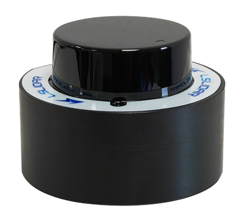
| Specification | Value |
|---|---|
| Dimensions | 52 mm diameter × 36.1 mm tall |
| Weight | 60 g |
| Range | 0.2 - 12.0 m |
| Range precision | ±3 cm (0-6 m); ±4.5 cm (6-12 m) |
| Field of view | 360° |
| Angular resolution | 0.48° - 0.96° |
Why this one:
One of the genuine advantages of ROS being open source is how much work it saves you. Manufacturers who want their device widely adopted publish either an API or — much better — a ROS 2 driver. When you're choosing components for your own robot after this course, treat driver availability as a hard specification alongside range and resolution. A marginally better sensor with no driver can easily cost you a fortnight.
The branch matters: -b N10_V1.0 corresponds to the N-10 model specifically.
Then fix three things in the driver's parameter file:
/lslidar_driver_node:
ros__parameters:
frame_id: laser_link # laser coordinate frame
group_ip: 224.1.1.2
add_multicast: false
device_ip: 192.168.1.200 # lidar source IP (network mode only)
device_ip_difop: 192.168.1.102
msop_port: 2368
difop_port: 2369
lidar_name: N10 # <-- MUST match your model
angle_disable_min: 0.0 # start of the angular blanking window
angle_disable_max: 0.0 # end of the angular blanking window
min_range: 0.0
max_range: 200.0
use_gps_ts: false
scan_topic: /scan # LaserScan topic name
interface_selection: serial # <-- 'serial' (USB), not 'net'
serial_port_: /dev/lslidar # <-- the udev symlink from §13.12
high_reflection: false
compensation: false
pubScan: true # publish sensor_msgs/LaserScan
pubPointCloud2: false
pointcloud_topic: /lslidar_point_cloud| Setting | Why it must change |
|---|---|
lidar_name: N10 | The driver supports M10, M10_P, M10_PLUS, M10_GPS, N10, L1... — the wrong name means the wrong packet parser and garbage scans. |
interface_selection: serial | The N-10 connects over USB, not Ethernet. Leave this on net and the driver waits forever for packets that never arrive. |
serial_port_: /dev/lslidar | The stable symlink you created in §13.12. This is precisely what that section was for. |
One more edit — stop the driver launching its own RViz, which a headless Pi cannot do:
return LaunchDescription([
driver_node,
# rviz_node, <-- comment this out
])
Notice the verification isn't "did the launch command exit without an error" — it's
ros2 topic hz, confirming data is genuinely flowing at a sane rate (~10 Hz here). A topic
existing in ros2 topic list proves only that something advertised it. Hold onto this habit;
§13.14 turns it into a full debugging exercise where a node launches perfectly cleanly and does nothing at
all.
<!-- LSLiDAR ROS 2 driver -->
<include file="$(find-pkg-share lslidar_driver)/launch/lslidar_launch.py"/>
</launch>✅ Forge now publishes sensor_msgs/LaserScan.
Place Forge a measured 1.00 m from a flat wall, facing it squarely. Echo /scan, find the
range reading nearest 0°, and compare it to your tape measure. Is it within the datasheet's ±3 cm? If
not, what would you check first — the sensor, the mounting, or your measurement? (Lecture 11 asked you the
same question about LIMO's LiDAR, deliberately.)
The parameter file sets frame_id: laser_link, but Forge's URDF names its LiDAR link something
generated by the CAD export (fastbot_n10_v2 in the reference). What breaks if those don't match?
Load the scan in RViz with Fixed Frame set to fastbot_base_link and observe. Then fix
it — and decide whether it's better to change the driver's frame_id or add a static transform,
and why.
Forge's camera is the Raspberry Pi Camera Module 2 (any Raspicam version works).
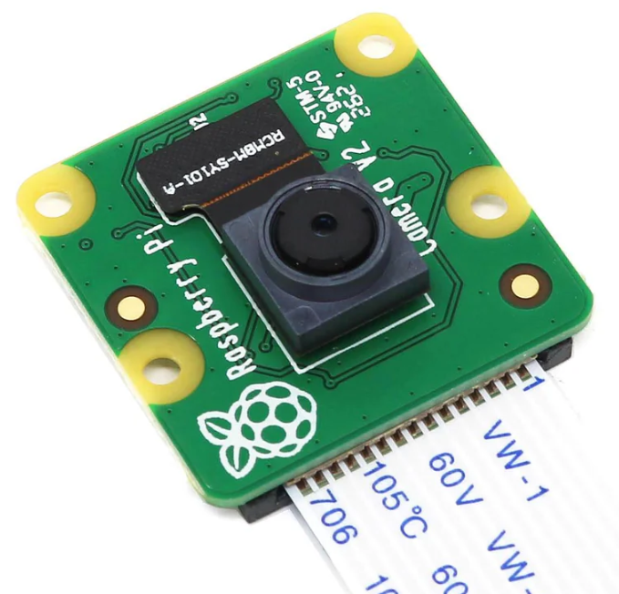
| Specification | Value |
|---|---|
| Sensor | 8 megapixel native, 3280 × 2464 stills |
| Video | 1080p30, 720p60, 640×480p90 |
| Size / weight | 25 × 23 × 9 mm / just over 3 g |
| Connection | 15 cm CSI ribbon cable (supplied) |
Why this camera:
Bringing this camera up is trickier than the LiDAR, for two reasons:
V4L2 is the Linux kernel's collection of camera device drivers plus a common API for
realtime video capture. Critically it supports CSI cameras, which is exactly what the
Raspicam is. And where there's a kernel API, there's a ROS 2 wrapper: Forge uses
ros2_v4l2_camera by Sander G. van
Dijk. It exposes every user-settable camera control as a ROS 2 parameter, uses cv_bridge to
convert raw frames to ROS 2 messages, supports image_transport compression, and supports
zero-copy intra-process communication. 🥳 More than enough — hooray for open source.
apt and not git clone
Some developers go the extra step of publishing their ROS 2 driver as a Debian package. That means instead
of cloning into your workspace and compiling, you just apt install it. Those packages land in
/opt/ros/$ROS_DISTRO/share, so a launch file requesting such a node needs the ROS
installation sourced — not just your workspace. image-transport-plugins comes along to give
you /image_raw/compressed (much kinder to WiFi than raw frames), and v4l-utils
gives you the diagnostic tools you're about to need.
<?xml version="1.0" encoding="UTF-8"?>
<launch>
<arg name="use_sim_time" default="False"/>
<arg name="robot_name" default="fastbot_1"/>
<arg name="robot_file" default="fastbot_multi.xacro"/>
<arg name="serial_port" default="/dev/arduino_nano"/>
<arg name="baud_rate" default="57600"/>
<arg name="loop_rate" default="30"/>
<arg name="encoder_cpr" default="2550"/>
<!-- Differential serial motor driver -->
<include file="$(find-pkg-share serial_motor)/launch/serial_motor.launch.py">
<arg name="robot_name" value="$(var robot_name)"/>
<arg name="serial_port" value="$(var serial_port)"/>
<arg name="baud_rate" value="$(var baud_rate)"/>
<arg name="loop_rate" value="$(var loop_rate)"/>
<arg name="encoder_cpr" value="$(var encoder_cpr)"/>
</include>
<!-- Robot state publisher -->
<include file="$(find-pkg-share fastbot_description)/launch/robot_state_publisher.launch.py">
<arg name="robot_name" value="$(var robot_name)"/>
<arg name="robot_file" value="$(var robot_file)"/>
</include>
<!-- LSLiDAR ROS 2 driver -->
<include file="$(find-pkg-share lslidar_driver)/launch/lslidar_launch.py"/>
<!-- v4l2 camera ROS 2 driver (Raspberry Pi camera) -->
<node pkg="v4l2_camera" exec="v4l2_camera_node" name="v4l2_camera_node"
namespace="$(var robot_name)">
<param name="image_size" value="[320, 240]"/>
<param name="camera_frame_id" value="$(var robot_name)_camera"/>
</node>
</launch>The camera is capable of 1080p30, and this launch file asks for 320×240. That's deliberate: raw uncompressed frames over WiFi will saturate the link and starve every other topic, including the ones keeping Forge from driving into a wall. Start small, use the compressed transport for anything you stream off-robot, and only raise the resolution when you have a concrete reason and have measured the bandwidth cost.
Launch it. The node starts. No errors. ros2 topic list shows /fastbot_1/image_raw
existing. And no messages ever flow through it. Forever. Silently.
This is precisely the habit Lecture 11 built around LIMO's error_code field, and the same
pattern as the commented-out publish_odometry() in §13.5: a system reporting no error
is not the same as a system that is working. Zero log output from a camera node means "nothing
crashed," not "images are flowing." Verify actual data, every time — the same
ros2 topic hz discipline as §13.13.
Since 2020, Raspberry Pi has used a camera stack based on libcamera, whose kernel driver is
bcm2835-unicam. ros2_v4l2_camera does not speak that stack — it expects the older
bm2835 mmal driver. The mismatch produces no error because nothing has failed;
the node opened a device node that simply never delivers frames.
Force the Pi back onto the legacy stack in its boot configuration:
/boot/firmware/config.txt.camera_auto_detect=0, to stop the overlays that load the unicam driver.start_x=1 at the end of the file, enabling the camera through the legacy driver.[all]
# Enable audio, I2C and SPI on the GPIO header. These relate to the base
# device-tree so they must appear *before* any other dtoverlay= line.
dtparam=audio=on
dtparam=i2c_arm=on
dtparam=spi=on
disable_overscan=1
# Enable the serial pins
enable_uart=1
# Autoload overlays for recognized cameras/displays on the CSI/DSI ports.
# Note this is for libcamera support, *not* the legacy camera stack.
camera_auto_detect=0 <-- was 1
display_auto_detect=1
# Config settings specific to arm64
arm_64bit=1
dtoverlay=dwc2
[cm4]
dtoverlay=dwc2,dr_mode=host
[all]
start_x=1 <-- add this
Driver name : bm2835 mmal is the confirmation you're looking for. If it instead reads something
like unicam, the change hasn't taken effect — check you edited
/boot/firmware/config.txt (not /boot/config.txt, which is a different file on
Ubuntu) and that you actually rebooted.
✅ Forge now publishes Image and CompressedImage messages. View them from your
workstation with rqt_image_view — the same tool you used on LIMO in Lecture 8.
Before making the config.txt change, launch the camera node and, using only
v4l2-ctl -D and ros2 topic hz /fastbot_1/image_raw, write down what you expect each
command to report while the bug is still present. Then apply the fix, reboot, and re-run both to check your
prediction. Specifically: what does ros2 topic hz print when no messages are
publishing — an error, or silence? Why is that distinction the whole lesson of this section?
Write a bring-up checklist for Forge, explicitly modelled on Lecture 11's LIMO physical bring-up checklist: visual inspection first, then power, then a wheels-off-ground motor test, then sensor sanity checks last. Adapt each step to Forge's own components from this session and Lecture 12. For every sensor step, state the specific command that verifies real data flow rather than mere absence of errors — and explain why that order matters.
Forge went from a bare compute board with a motor MCU attached to a robot with a real ROS 2 nervous system, a formally described body, and two working senses. You built a colcon workspace and custom messages, derived differential-drive kinematics by hand before reading the code that implements them, wrote a namespaced driver and a single bringup launch file, designed a chassis in CAD and generated its URDF automatically rather than transcribing it, published a TF tree, made two USB devices addressable by identity instead of enumeration order, and brought up a LiDAR and a camera — the camera via a genuinely instructive silent failure you diagnosed rather than were handed.
Lecture 14 takes this exact URDF and these exact sensors into Gazebo, adds a 3D-printed cover, and closes out the course.
The LiDAR and camera both attach directly to the Pi, completely bypassing the Arduino Nano — while the motors are only reachable through it. What distinguishes those two categories of device? Where exactly have you seen this same architectural split before in this course?
ament_cmake package, and I verified mine with ros2 interface show.Twist to encoder counts per PID loop, on paper, without the code.motor_driver.py and explain what each method does — including why send_command needs a mutex under a multi-threaded executor.publish_odometry() call, and verified /odom against a tape measure.robot_name matters beyond avoiding naming collisions./cmd_vel using teleop_twist_keyboard.onshape-to-robot, and I know why the "no mass" warnings matter for Lecture 14..gitignore before it existed.robot_state_publisher and inspected the resulting TF tree in RViz.ros2 topic hz, not just the launch log.v4l2-ctl -D.Q1. A Twist with linear.x = 0 and angular.z = 1.0 arrives. What do the differential-drive equations produce, and what does the robot do?
v_L = −ωL/2 and v_R = +ωL/2 — equal and opposite wheel speeds, so the robot rotates in place about its own centre.
Q2. Why does send_command take a Lock before writing to the serial port?
The node runs on a MultiThreadedExecutor with a reentrant callback group, so the /cmd_vel callback and the 10 Hz encoder timer can execute simultaneously. Two interleaved writes to one serial port produce corrupted commands and mismatched replies. The mutex serialises access.
Q3. In the CAD-to-URDF export, what determines the name and type of each resulting URDF joint?
The mate in the CAD assembly. Its name becomes the joint name, and its type determines the joint type — a fasten mate becomes fixed, a revolute mate becomes continuous.
Q4. Why must the Onshape API access/secret key pair never be committed to version control?
It's a credential, not project data — anyone holding it can act on your CAD account through the API. A key committed to a repo, even briefly or privately, should be treated as compromised and rotated.
Q5. Why does a udev rule beat hardcoding /dev/ttyUSB0 in a launch file?
/dev/ttyUSBn names are assigned by enumeration order, not device identity. Plugging devices in a different order, or adding one, can silently reassign which physical sensor a hardcoded path points to. A rule keyed to vendor/product ID creates a stable symlink instead.
Q6. The LiDAR driver launches, prints "Successfully initialize driver", and /scan appears in ros2 topic list. Is the LiDAR working?
Unproven. A topic existing means something advertised it. Run ros2 topic hz /scan and confirm a sane rate (~10 Hz for the N-10). Only then is it working.
Q7. (Gotcha) The camera node launches with zero errors and /image_raw exists, but no frames arrive. What's the cause, and what one command confirms it?
The Pi is running the modern libcamera stack (bcm2835-unicam), which ros2_v4l2_camera doesn't speak. Confirm with v4l2-ctl -D: it should report bm2835 mmal. Fix by setting camera_auto_detect=0 and adding start_x=1 in /boot/firmware/config.txt, then rebooting.
Q8. Why are Forge's motor bodies attached with fixed joints rather than continuous ones?
The motor housing is bolted rigidly to the chassis and doesn't move relative to it. What rotates is the output shaft — and that rotation is modelled by the wheel joint, which is a child of the motor link.
src/ plus the generated build/, install/ and log/ directories produced by colcon build.L)robot_state_publisher/joint_states and broadcasts the corresponding TF tree.bm2835 mmal driver that V4L2-based tools expect. Modern Pi images default to libcamera/unicam instead, requiring an explicit boot-config change.source install/setup.bash after building, then getting "package not found" for a package you can see.CMakeLists.txt entry and Python import disagreeing on singular vs plural (MotorCommand vs MotorCommands).encoder_cpr default (2500 or 2550) instead of passing your measured value.use_sim_time: True hardcoded in robot_state_publisher.launch.py on real hardware, then debugging phantom TF extrapolation errors.onshape-to-robot the full assembly instead of the simplified one, producing a link per screw./dev/ttyUSB0 instead of a udev symlink, then being confused when it points elsewhere after a re-plug.dmesg.ros2 topic hz./boot/config.txt instead of /boot/firmware/config.txt on Ubuntu, then wondering why the reboot changed nothing.